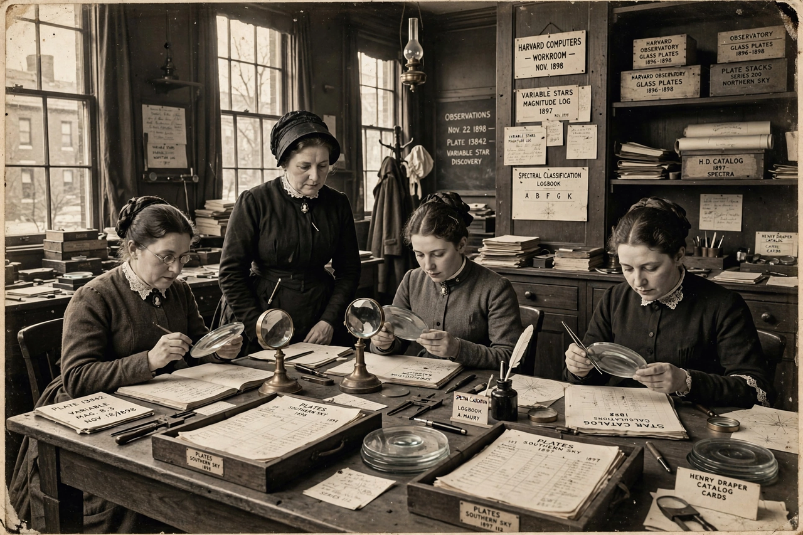

Harvard College Observatory

Harvard College Observatory
| Established | 1839 |
|---|---|
| Location | 60 Garden Street, Cambridge, Massachusetts |
| Parent | Harvard University; since 1973 part of the Center for Astrophysics | Harvard & Smithsonian |
| Notable staff | Edward Pickering, Williamina Fleming, Annie Jump Cannon, Henrietta Swan Leavitt, Cecilia Payne-Gaposchkin |
The Harvard College Observatory (HCO) is an institution managing a complex of buildings and multiple instruments used for astronomical research by Harvard University. Founded in 1839, it was among the first major astronomical observatories in the United States. The observatory became famous for its pioneering programme of stellar spectroscopy and photometry, carried out in large part by a celebrated staff of women "computers", and for Henrietta Swan Leavitt's discovery of the period–luminosity relation for Cepheid variables, a cornerstone of the cosmic distance scale. Since 1973 it has been jointly operated with the Smithsonian Astrophysical Observatory as the Center for Astrophysics | Harvard & Smithsonian (CfA).
History
Harvard's trustees formally established the observatory in 1839, appointing William Cranch Bond, a Boston clockmaker and amateur astronomer, as its first director. Its 15-inch "Great Refractor", installed in 1847, was for two decades the largest telescope in the United States and was used for early daguerreotypes of the Moon and Vega. Under Edward Charles Pickering, director from 1877 to 1919, the observatory shifted decisively toward astrophysics: mass-produced photographic surveys of the sky, systematic stellar photometry (the Harvard Revised Photometry), and spectroscopic classification on an industrial scale, supported by a southern station at Arequipa, Peru.
The Harvard Computers
To process the torrent of photographic plates, Pickering employed a large staff of women as skilled "computers" — at a time when women were excluded from most scientific posts. Williamina Fleming, who classified stars and discovered the Horsehead Nebula, curated the plate collection; Annie Jump Cannon devised the O–B–A–F–G–K–M spectral classification still in use and personally classified some 350,000 stars for the Henry Draper Catalogue (1918–1924), which catalogued 225,300 stars. Henrietta Swan Leavitt, studying variable stars in the Small Magellanic Cloud, discovered in 1908–1912 that Cepheid variables' brightness periods correlate with their intrinsic luminosity — the "Leavitt law" that let astronomers measure distances across the universe and underpinned the resolution of the Great Debate of 1920. Antonia Maury and Cecilia Payne-Gaposchkin also made foundational contributions; Payne's 1925 dissertation showed that stars are composed overwhelmingly of hydrogen and helium.
Collections and later history
The observatory preserves one of the world's largest archives of astronomical photographic plates — roughly half a million glass plates spanning a century — now being digitised by the DASCH project to enable time-domain astronomy over a 100-year baseline. Under directors including Harlow Shapley (1921–1952), who made Harvard a leading centre of galactic astronomy, the observatory's research role merged in 1973 into the CfA, and its Garden Street complex continues to house the CfA's headquarters, the Wolbach Library, and historic instruments.
See also: Great Debate (astronomy) · Henrietta Swan Leavitt · Annie Jump Cannon · Harvard University